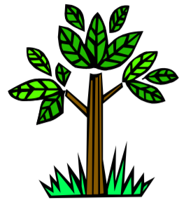

Lo scopo dell’iniziativa è di dare vita ad una manifestazione di massa e di grande richiamo che si colloca temporalmente nel momento in cui si manifesta la maggiore richiesta del mercato (acquisti) e che intende dare impulso al comparto florovivaistico, all’abitare ed a tutti i settori legati alla vita nel verde, stimolando i visitatori a creare e rinnovare i propri spazi verdi, oltreché conoscere tutte le proposte, i nuovi prodotti, attrezzature e tecnologie.
Il Parco delle Emozioni, in via Giuseppe Dozza, 24 (non lontano dal centro di Bologna), è la sede ideale per eventi di grande richiamo: un ampio parco di circa 35 ettari su cui si erge un’antica torre del 1.300, un’ampia e nuovissima serra di 2.500 metri quadri, vasta area espositiva e ampio parcheggio.
Questi i giardini in concorso
| CONVEGNI | |
|---|---|
| GIARDINO EXPRESS: corso pratico di giardinaggio | venerdì 25 aprile - ore 11.00 sabato 3 maggio - ore 16.00 |
| IL PERFETTO GIARDINIERE: consigli pratici e novità in libreria | venerdì 25 aprile - ore 16.00 |
| COLORI E AROMI: dal giardino alla tavola | venerdì 25 e domenica 27 aprile - ore 16.00 giovedì 1 e domenica 4 maggio - ore 16.00 |

Per maggiori informazioni scrivi a: giardiniterrazzi@gmail.com
Alessandro Luppi